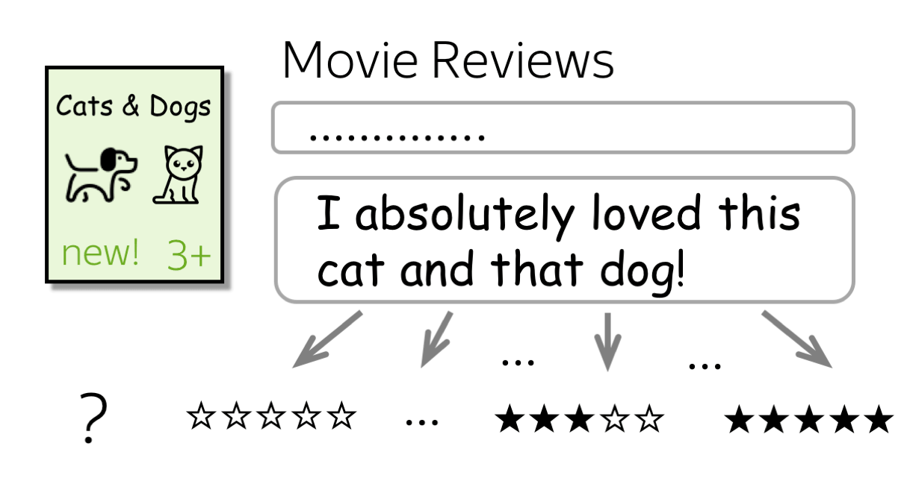
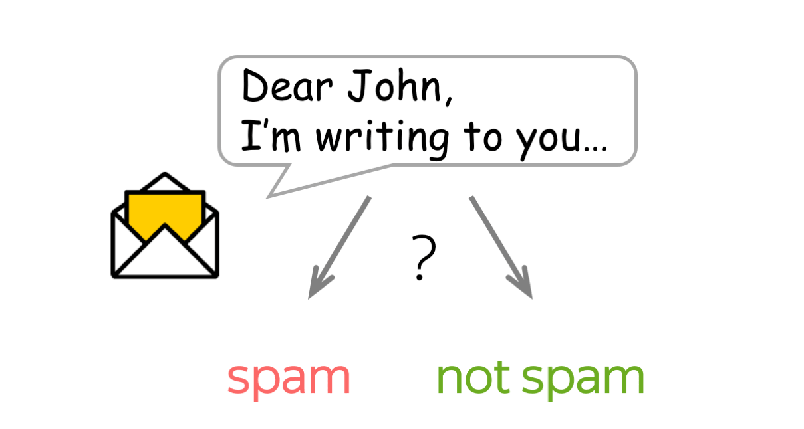
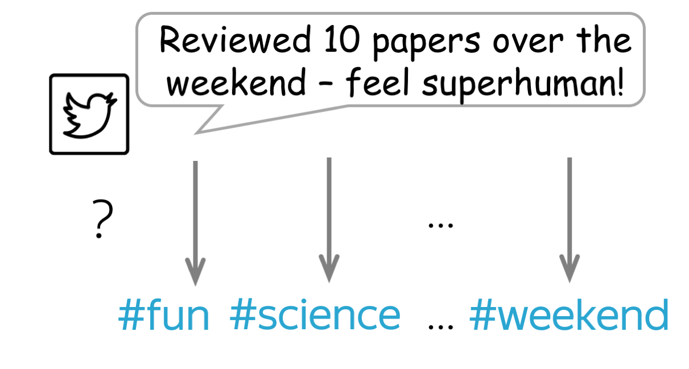

Recopilación de datos
Datos estructurados vs. datos no estructurados
Los datos son el oro del siglo xxi (...).
Ejemplo de datos estructurados

Clasificación multiclase:
hay muchas etiquetas, pero solo una es correcta

Clasificación binaria:
hay dos etiquetas y solo una de ellas es correcta

Clasificación multiclase:
hay muchas etiquetas y varias pueden ser correctas
Text classification is an extremely popular task. You enjoy working text classifiers in your mail agent: it classifies letters and filters spam. Other applications include document classification, review classification, etc.
Text classifiers are often used not as an individual task, but as part of bigger pipelines. For example, a voice assistant classifies your utterance to understand what you want (e.g., set the alarm, order a taxi or just chat) and passes your message to different models depending on the classifier's decision. Another example is a web search engine: it can use classifiers to identify the query language, to predict the type of your query (e.g., informational, navigational, transactional), to understand whether you what to see pictures or video in addition to documents, etc.
Since most of the classification datasets assume that only one label is correct (you will see this right now!), in the lecture we deal with this type of classification, i.e. the single-label classification. We mention multi-label classification in a separate section (Multi-Label Classification).
Datasets for Classification
Datasets for text classification are very different in terms of size (both dataset size and examples' size), what is classified, and the number of labels. Look at the statistics below.
| Dataset | Type | Number of labels | Size (train/test) | Avg. length (tokens) |
|---|---|---|---|---|
| LaSolanaNews | tema | 7 | 1093 | 200 |
| IMDb Review | opinión | 2 | 25k / 25k | 271 |
The most popular datasets are for sentiment classification. They consist of reviews of movies, places or restaurants, and products. There are also datasets for question type classification and topic classification.
To better understand typical classification tasks, below you can look at the examples from different datasets.
How to: pick a dataset and look at the examples to get a feeling of the task. Or you can come back to this later!
Dataset Description (click!)
LaSolananews
Etiqueta: cultura
Autor: María Muñoz
Fecha:2023-07-04
Título:
Más de 10.000 personas pasaron por el 'Oasis Sound' en su segunda edición
Etiqueta: sociedad
Autor: Paulino Sánchez
Fecha:2010-03-17
Título:
Paqui Ruiz: "La TDT supondrá un cambio como lo fue el paso del blanco y negro al color"
Etiqueta: deporte
Autor: Aurelio Maroto
Fecha:2017-10-04
Título:
La Solana huye de euforias en vísperas del clásico contra el Manzanares
Dataset Description (click!)
IMDb is a large dataset of informal movie reviews from the Internet Movie Database. The collection allows no more than 30 reviews per movie. The dataset contains an even number of positive and negative reviews, so randomly guessing yields 50% accuracy. The reviews are highly polarized: they are only negative (with the highest score 4 out of 10) or positive (with the lowest score 7 out of 10).
For more details, see the original paper.
Label: negative
Review
Hobgoblins .... Hobgoblins .... where do I begin?!?
This film gives Manos -
The Hands of Fate and Future War a run for their money as the worst film ever made .
This one is fun to laugh at , where as Manos was just painful to watch . Hobgoblins will
end up in a time capsule somewhere as the perfect movie to describe the term : " 80 's cheeze " .
The acting ( and I am using this term loosely ) is atrocious , the Hobgoblins are some of the worst
puppets you will ever see , and the garden tool fight has to be seen to be believed .
The movie was the perfect vehicle for MST3 K , and that version is the only way to watch this mess .
This movie gives Mike and the bots lots of ammunition to pull some of the funniest one -
liners they have ever done . If you try to watch this without the help of Mike and the bots .....
God help you ! !
Label: positive
Review
One of my favorite movies I saw at preview in Seattle . Tom Hulce was amazing , with out words could
convey his feelings / thoughts . I actually sent Mike Ferrell some donation money to help the film
get distributed . It is good . System says I need more lines but do not want to give away plot stuff .
I was in the audience in Seattle with Hulce and director , a writer I think and Mike Ferrell .
They talked for about an hour afterwords . Not really a dry eye in the house . Why Hollywood continues
to be stupid I do not know . ( actually I do know , it is our fault , look what we watch)Well you get
what you pay for guys . Get this and see it with someone special . It is a gem .
Label: negative
Review
Okay , if you have a couple hours to waste , or if you just really hate your life , I would say watch
this movie . If anything it 's good for a few laughs . Not only do you have obese , topless natives ,
but also special effects so bad they are probably outlawed in most states . Seriuosly ,
the rating of ' PG ' is pretty humorous too , once you see the Native Porn Extravaganza .
I would n't give this movie to my retarded nephew . You could n't even show this to Iraqi
prisoners without violating the Geneva Convention . The plot is sketchy , and cliché , and dumb ,
and stupid . The acting is horrible , and the ending is so painful to watch I actually began pouring
salt into my eye just to take my mind off of the idiocy filling my TV screen .
Label: positive
Review
I really liked this movie ... it was cute . I enjoyed it , but if you did n't , that is your fault .
Emma Roberts played a good Nancy Drew , even though she is n't quite like the books . The old fashion
outfits are weird when you see them in modern times , but she looks good on them . To me , the rich
girls did n't have outfits that made them look rich . I mean , it looks like they got all the clothes
-blindfolded- at a garage sale and just decided to put it on all together . All of the outfits
were tacky , especially when they wore the penny loafers with their regular outfits . I do not
want to make the movie look bad , because it definitely was n't ! Just go to the theater and
watch it ! ! ! You will enjoy it !
Label: negative
Review
I always found Betsy Drake rather creepy , and this movie reinforces that . As another review said ,
this is a stalker movie that is n't very funny . I watched it because it has CG in it ,
but he hardly gets any screen time . It 's no " North by Northwest " ...
Label: negative
Review
This movie was on t.v the other day , and I did n't enjoy it at all . The first George of the
jungle was a good comedy , but the sequel .... completely awful . The new actor and
actress to play the lead roles were n't good at all , they should of had the original
actor ( Brendon Fraiser ) and original actress ( i forgot her name ) so this movie gets
the 0 out of ten rating , not a film that you can sit down and watch and enjoy ,
this is a film that you turn to another channel or take it back to the shop if hired or
bought . It was good to see Ape the ape back , but was n't as fun as the first ,
they should of had the new George as Georges son grown up , and still had Bredon and
( what s her face ) in the film , that would 've been a bit better then it was .
Label: positive
Review
I loved This Movie . When I saw it on Febuary 3rd I knew I had to buy It ! ! ! It comes out to buy
on July 24th ! ! ! It has cool deaths scenes , Hot girls , great cast , good story , good
acting . Great Slasher Film . the Movies is about some serial killer killing off four girls .
SEE this movies
Label: positive
Review
gone in 60 seconds is a very good action comedy film that made over $ 100 million but got blasted
by most critics . I personally thought this was a great film . The story was believable and
has probobly the greatest cast ever for this type of movie including 3 academy award winners
nicolas cage , robert duvall and the very hot anjolina jolie . other than the lame stunt
at the end this is a perfect blend of action comedy and drama .
my score is * * * * ( out of * * * * )
Label: positive
Review
This is one of the most interesting movies I have ever seen . I love the backwoods feel of this movie .
The movie is very realistic and believable . This seems to take place in another era , maybe
the late 60 's or early 70 's . Henry Thomas works well with the young baby . Very moving story
and worth a look .
Label: positive
Review
I admit it 's very silly , but I 've practically memorized the damn thing ! It holds a lot of good
childhood memories for me ( my brother and I saw it opening day ) and I have respect for
any movie with FNM on the soundtrack .
Label: positive
Review
I love the series ! Many of the stereotypes portraying Southerrners as hicks are very apparent ,
but such people do exist all too frequently . The portrayal of Southern government rings
all too true as well , but the sympathetic characters reminds one of the many good things
about the South as well . Some things never change , and we see the " good old boys " every day !
There is a Lucas Buck in every Southern town who has only to make a phone call to make things
happen , and the storybook " po ' white trash " are all too familiar . Aside from the supernatural
elements , everything else could very well happen in the modern South ! I somehow think Trinity ,
SC must have been in Barnwell County !
Dataset Description (click!)
The Yelp reviews dataset is obtained from the Yelp Dataset Challenge in 2015. Depending on the number of labels, you can get either Yelp Full (all 5 labels) or Yelp Polarity (positive and negative classes) dataset. Full has 130,000 training samples and 10,000 testing samples in each star, and the Polarity dataset has 280,000 training samples and 19,000 test samples in each polarity.
For more details, see the Kaggle Challenge page.
Label: 4
Review
I had a serious craving for Roti. So glad I found this place.
A very small menu selection but it had exactly what I wanted. The serving for
$8.20 after tax is enough for 2 meals. I know where to go from now on for a great
meal with leftovers. This is a noteworthy place to bring my Uncle T.J. who's a Trini
when he comes to visit.
Label: 2
Review
The actual restaurant is fine, the service is friendly and good.
I am not going to go in to the food other than to say, no.
Oh well $340 bucks and all I can muster is a no.
Label: 5
Review
What a cool little place tucked away behind a strip mall. Would never have found
this if it was not suggested by a good friend who raved about the cappuccino!
He is world traveler, so, it's a must try if it's the best cup he's ever had.
He was right! Don't know if it's in the beans or the care that they take to make
it with a fab froth decoration on top. My hubby and I loved the caramel brulee taste..
My son loved the hot ""warm"" cocoa. Yeah, we walked in as a family last night and
almost everyone turned our way since we did not fit the hip college crowd.
Everyone was really friendly, though. The sweet young man behind the
counter gave my son some micro cinnamon doughnuts and scored major points with the
little dude! We will be back.
Label: 3
Review
Jersey Mike's is okay. It's a chain place, and a bit over priced for fast food.
I ordered a philly cheese steak. It was mostly bread, with a few
thing microscopic slices of meat. A little cheese too. And a sliver or
two of peppers. But mostly, it was bread. I think it's funny the people
that work here try to make small talk with you. "So, what are you guys up to tonight?"
I think it would be fun to just try and f*#k with them, and say something like,
"Oh you know, smoking a little meth and just chilling with some hookers."
See what they say to that.
Label: 5
Review
Love it!!! Wish we still lived in Arizona as Chino is the one thing we miss.
Every time I think about Chino Bandido my mouth starts watering.
If I am ever in the state again I will drive out of my way just to go to it again. YUMMY!
Label: 4
Review
I have been here a few times, but mainly at dinner. Dinner Has always been great, great
waiters and staff, with a LCD TV playing almost famous famous bolywood movies.
LOL It cracks me up when they dance.....LOL...anyhow, Great vegetarian choices for
people who eat there veggies, but trust me, I am a MEAT eater, Chicekn Tika masala,
Little dry but still good. My favorite is there Palak Paneer. Great for the vegetarian.
I have also tried there lunch Buffet for 11.00. I give a Thumbs up.. Good,
serve yourself, and pig out!!!!!!
Label: 3
Review
Very VERY average. Actually disappointed in the braciole. Kelsey with the pretty smile and form
fitting shorts would probably make me think about going back and trying something different.
Label: 1
Review
So, what kind of place serves chicken fingers and NO Ranch dressing?????? The only sauces they
had was honey mustard and ""Canes Secret sauce"" Can I say EEWWWW!! I thought that
the sauce tasted terrible. I am not too big a fan of honey mustard but I do On occasion
eat it if there is nothing else And that wasn't even good! The coleslaw was awful also.
I do have to say that the chicken fingers were very juicy but also very bland.
Those were the only 2 items that I tried, not that there were really any more items on
the menu, Texas toast? And Fries I think?? Overall, I would never go back.
Label: 4
Review
Good food, good drinks, fun bar.
There are quite a few Buffalo Wild Wings in the valley and they're a fun place to grab a quick lunch or dinner and watch the game.
They have a pretty good garden burger and their buffalo chips (french fry-ish things) are really good.
If you like bloody mary's, they have the best one. It's so good...really spicy and filled with celery and olives.
Be careful when you come though, if there is a game on, you'll have to get there early or you definitely won't get a spot to sit.
Label: 5
Review
Excellent in every way. Attentive and fun owners who tend bar every weekend night - GREAT live music,
excellent wine selection. Keeping Fountain Hills young.... one weekend at a time.
Label: 1
Review
After repeat visits it just gets worse - the service, that is. It was as if we were held
hostage and could not leave for a full 25 minutes because that's how long it took to receive
hour check after several requests to several different employees. Female servers might
be somewhat cute but know absolutely nothing about beer and this is a brewpub.
I asked if they have an seasonal beers and the reply was no, that they only sell
their own beers! Even more amusing is their ""industrial pale ale"" is an IPA but it
is not bitter. So, they say it's an IPA but it's not bitter, it's not a true-to-style IPA.
Then people say ""Oh I don't like IPA's"" and want something else. Their attempt
to rename a beer/style is actually hurting them. Amazing.
Dataset Description (click!)
The Amazon reviews dataset consists of reviews from amazon which include product and user information, ratings, and a plaintext review. The dataset is obtained from the Stanford Network Analysis Project (SNAP). Depending on the number of labels, you can get either Amazon Full (all 5 labels) or Amazon Polarity (positive and negative classes) dataset. Full has 600,000 training samples and 130,000 testing samples in each star, and the Polarity dataset has 1800,000 training samples and 200,000 test samples in each polarity. The fields used are review title and review content.
Label: 4
Review Title: good for a young reader
Review Content:
just got this book since i read it when i was younger and loved it. i will reread it one
of these days, but i bet its pretty lame 15 years later, oh well.
Label: 2
Review Title: The Castle in the Attic
Review Content:
i read the castle in the attic and i thoght it wasn't very entrtaning.
but that's just my opinion. i thought on some of the chapters it dragged
on and lost me alot. like it would talk about one thing and then another without
alot of detail. for my opinion, it was an ok book. it had it's moments like whats
going to happen next then it was really boring.
Label: 1
Review Title: worst book in the world!!!!!!!!!!!!!!!!!!!!!!!!!!!!!!!!!!!!
Review Content:
This was the worst book I have ever read in my entire life! I was forced to read it for
school. It was complicated and very boring. I would not recommend this book to anyone!!
Please don't waste your time and money to read this book!! Read something else!!
Label: 3
Review Title: It's okay.
Review Content:
I'm using it for track at school as a sprinter. It's okay, but to hold it together
is a velcro strap. So you either use the laces or take them out and use only the velcro.
Also, if you order them, order them a half size or a full size biggerthen your normal
size or else it'll be a tight squeeze. Plus side, you can still run on your toes in them.
Label: 5
Review Title: Time Well Spent
Review Content:
For those beginning to read the classics this one is a great hook. While the characters are
complex the story is linear and the allusions are simple enough to follow. One can't help
but hope Tess's life will somehow turn out right although knowing it will not. The burdens
she encounters seem to do little to stop her from moving forward. Life seems so unfair
to her, but Hardy handles her masterfully; indeed it is safe to say Hardy loves her more
than God does.
Label: 2
Review Title: Not a brilliant book but...
Review Content:
I didn't like this book very much. It was silly. I'm sorry that I've wasted time reading
this book. There are better books to read.
Label: 3
Review Title: Simple
Review Content:
This book was not anything special. Although I love romances, it was too simple.
The symbolism was spelled out to the readers in a blunt manner. The less educated
readers may appreciate it. The wording was quite beautiful at times and the plot was
enchanting (perfect for a movie) but it is not heart wrenching like the movie Titantic
(which was a must see!) ;)
Label: 1
Review Title: WHY???????????????????????????????????????????????????
Review Content:
WHY are poor, innocent school kids forced to read this intensly dull text? It is
enough to put anyone off English Lit for LIFE. If anyone in authority is reading
this, PLEASE take this piece of junk OFF the sylabus...PLEASE!!!!!!!!!!!
Label: 4
Review Title: looking back
Review Content:
I have read several Thomas Hardy novels starting with The Mayor of Casterbridge many years
ago in high school and I never really appreciated the style and the fact that like other Hardy
novels Tess is a love story and a very good story. Worth reading
Label: 5
Review Title: Great Puzzle
Review Content:
This is an excellent puzzle for very young children. Melissa & Doug products are well made and kids
love them. This puzzle is wooden so kids wont destroy it if they try to roughly put the pieces in.
The design is adorable and makes a great gift for any young animal lover.
Dataset Description (click!)
TREC is a dataset for classification of free factual questions. It defines a two-layered taxonomy, which represents a natural semantic classification for typical answers in the TREC task. The hierarchy contains 6 coarse classes (ABBREVIATION, ENTITY, DESCRIPTION, HUMAN, LOCATION and NUMERIC VALUE) and 50 fine classes.
For more details, see the original paper.
Label: DESC (description)
Question: How did serfdom develop in and then leave Russia ?
Label: ENTY (entity)
Question: What films featured the character Popeye Doyle ?
Label: HUM (human)
Question: What team did baseball 's St. Louis Browns become ?
Label: HUM (human)
Question: What is the oldest profession ?
Label: DESC (description)
Question: How can I find a list of celebrities ' real names ?
Label: ENTY (entity)
Question: What fowl grabs the spotlight after the Chinese Year of the Monkey ?
Label: ABBR (abbreviation)
Question: What is the full form of .com ?
Label: ENTY (entity)
Question: What 's the second - most - used vowel in English ?
Label: DESC (description)
Question: What are liver enzymes ?
Label: HUM (human)
Question: Name the scar-faced bounty hunter of The Old West .
Label: NUM (numeric value)
Question: When was Ozzy Osbourne born ?
Label: DESC (description)
Question: Why do heavier objects travel downhill faster ?
Label: HUM (human)
Question: Who was The Pride of the Yankees ?
Label: HUM (human)
Question: Who killed Gandhi ?
Label: LOC (location)
Question: What sprawling U.S. state boasts the most airports ?
Label: DESC (description)
Question: What did the only repealed amendment to the U.S. Constitution deal with ?
Label: NUM (numeric value)
Question: How many Jews were executed in concentration camps during WWII ?
Label: DESC (description)
Question: What is " Nine Inch Nails " ?
Label: DESC (description)
Question: What is an annotated bibliography ?
Label: NUM (numeric value)
Question: What is the date of Boxing Day ?
Label: ENTY (entity)
Question: What articles of clothing are tokens in Monopoly ?
Label: HUM (human)
Question: Name 11 famous martyrs .
Label: DESC (description)
Question: What 's the Olympic motto ?
Label: NUM (numeric value)
Question: What is the origin of the name ` Scarlett ' ?
Dataset Description (click!)
The dataset is gathered from Yahoo! Answers Comprehensive Questions and Answers version 1.0 dataset. In contains the 10 largest main categories: "Society & Culture", "Science & Mathematics", "Health, "Education & Reference", "Computers & Internet", "Sports", "Business & Finance", "Entertainment & Music", "Family & Relationships", "Politics & Government". Each class contains 140,000 training samples and 5,000 testing samples. The data consists of question title and content, as well as the best answer.
Label: Society & Culture
Question Title: Why do people have the bird, turkey for thanksgiving?
Question Content: Why this bird? Any Significance?
Best Answer
It is believed that the pilgrims and indians shared wild turkey and venison on the
original Thanksgiving.
Turkey's "Americanness" was established by
Benjamin Franklin, who had advocated for the turkey, not the bald eagle,
becoming the national bird.
Label: Science & Mathematics
Question Title: What is an "imaginary number"?
Question Content: What is an "imaginary number",
and how is it treated in algebra equations?
Best Answer
Imaginary numbers are numbers than when squared equal a negative number, as in i^2 = -1,
where i is the imaginary number. You'll also often see them represented as i = √-1
(that's the square root of -1).
Don't be confused by the poorly chosen name -
imaginary numbers do indeed exist and are used in advanced math, such as in the
physics of electromagnetic fields. The analogy that Wikipedia uses is a good one -
just like you don't need the concept of fractions to count stones, it doesn't mean that
fractions don't exist. :)
Label: Health
Question Title: Does echinacea really help prevent colds?
Question Content: Or is a waste of money...
Best Answer
Well, there appears to be some controvery about this. While some people swear by the
stuff, others say that it has no real effect on overcoming a cold.
Here are some
links, one of which is from a National Institute of Health study. I hope these help
you decide whether to head to the health store or not.
Label: Education & Reference
Question Title: How do I find an out of print book?
Question Content: When I was a kid I remember seeing a book that was like an
yearbook of all newspapers published by the Times during WW II.
Each of the years is compiled into a different book. It gave one a very
uniqie perspecitev into the UK druing the war, and even had advertisements
from thaat time. Anybody out there know how to track such books?
Best Answer
here are several websites that you can find rare or out of print books.
A couple would be alibris.com or abebooks.com. These sites list books by
booksellers all over the country and some internationally.
Label: Computers & Internet
Question Title: How can I record audio directly from the browser to the web server?
Question Content: For a podcasting application, I'd like my web server
to be able to receive audio straight from the browser. Something like a "Push to talk"
button. It seems it's possible to do this with Flash. Is there any other way?
With
Flash, do I need to buy a Macromedia server licence, or are there alternatives to have
Flash on the browser talk to my server?
Best Answer
Userplane has an audio/video recorder that will do that -
you can check it out at http://www.userplane.com/apps/videoRecorder.cfm
Label: Sports
Question Title: Why doesn't the NBA implement a minor leagues?
Question Content: I don't want to see any more High School kids on the court,
shooting airballs and missing defensive assignments.
Best Answer
The NBA does have minor leagues - they're called the CBA, and the International leagues. :)
Seriously - because viewers seem to value explosiveness over efficiency,
I think we're seeing a major shift in the average age of NBA players towards
young athletes that are quicker, high-flying and more resilient to injury.
I wouldn't be surprised at all if by the end of this decade the average age of the
league allstars is well under 25.
Label: Business & Finance
Question Title: When will Google buy Yahoo?
Question Content: The two businesses are very complementary in terms
of strengths and weaknesses. Do we want to beat ourselves up competing with
each other for resources and market share, or unite to beat MSFT?
Best Answer
Their respective market caps are too close for this to ever happen.
Interestingly,
many reporters, analysts and tech pundits that I talk to think that the supposed
competition between Google and Yahoo is fallacious, and that they are very different
companies with very different strategies. Google's true competitor is often seen as
being Microsoft, not Yahoo. This would support your claim that they are complementary.
Label: Entertainment & Music
Question Title: Can someone tell me what happened in Buffy's series finale?
Question Content: I had to work and missed the ending.
Best Answer
The gang makes an attack on the First's army, aided by Willow, who performs a powerful
spell to imbue all of the Potentials with Slayer powers. Meanwhile, wearing the amulet
that Angel brought, Spike becomes the decisive factor in the victory, and Sunnydale is
eradicated. Buffy and the gang look back on what's left of Sunnydale, deciding what
to do next...
--but more importantly, there will no longer be any slaying in Sunnydale,
or is that Sunnyvale....
Label: Family & Relationships
Question Title: How do you know if you're in love?
Question Content: Is it possible to know for sure?
Best Answer
In my experience you just know. It's a long term feeling of always wanting to share
each new experience with the other person in order to make them happy, to laugh or
to know what they think about it. It's jonesing to call even though you just got off
an hour long phone call with them. It's knowing that being with them makes you a
better person. It's all of the above and much more.
Label: Politics & Government
Question Title: How come it seems like Lottery winners are always the
ones that buy tickets in low income areas.?
Question Content: Pure luck or Government's way of trying to balance the rich and the poor.
Best Answer
I would put it down to psychology. People who feel they are well-off feel no need to participate in the
lottery programs. While those who feel they are less than well off think "Why not bet a buck or two
on the chance to make a few million?". It would seem to make sense to me.
addition: Yes Matt -
agreed. I just didn't state it as eloquently. Feeling 'no need to participate' is as you say related to
education, and those well off tend to have a better education.
Dataset Description (click!)
The AG’s corpus was obtained from news articles on the web. From these articles, only the AG’s corpus contains only the title and description fields from the the 4 largest classes.
The dataset was introduced in this paper.
Label: Sci/Tech
Title: Learning to write with classroom blogs
Description
Last spring Marisa Dudiak took her second-grade class in Frederick County,
Maryland, on a field trip to an American Indian farm.
Label: Sports
Title: Schumacher Triumphs as Ferrari Seals Formula One Title
Description
BUDAPEST (Reuters) - Michael Schumacher cruised to a record 12th win of the season in the Hungarian
Grand Prix on Sunday to hand his Ferrari team a sixth successive constructors' title.
Label: Business
Title: DoCoMo and Motorola talk phones
Description
Japanese mobile phone company DoCoMo is in talks to buy 3G handsets from Motorola,
the world's second largest handset maker.
Label: World
Title: Sharon 'backs settlement homes'
Description
Reports say Israeli PM Ariel Sharon has given the green light to new homes in West Bank settlements.
Label: Business
Title: Why Hugo Chavez Won a Landslide Victory
Description
When the rule of Venezuelan President Hugo Chavez was reaffirmed in a landslide 58-42 percent
victory on Sunday, the opposition who put the recall vote on the ballot was stunned.
They obviously don't spend much time in the nation's poor neighborhoods.
Label: Sci/Tech
Title: Free-Speech for Online Gambling Ads Sought
Description
The operator of a gambling news site on the Internet has asked a federal judge to declare that
advertisements in U.S. media for foreign online casinos and sports betting outlets
are protected by free-speech rights.
Label: World
Title: Kerry takes legal action against Vietnam critics (AFP)
Description
AFP - Democratic White House hopeful John Kerry's campaign formally alleged that a group attacking
his Vietnam war record had illegal ties to US President George W. Bush's reelection bid.
Label: Sports
Title: O'Leary: I won't quit
Description
The Villa manager was said to be ready to leave the midlands club unless his assistants
Roy Aitken and Steve McGregor were also given new three-and-a-half year deals.
Label: World
Title: Egypt eyes possible return of ambassador to Israel
Description
CAIRO - Egypt raised the possibility Tuesday of returning an ambassador to Israel soon, according
to the official Mena news agency, a move that would signal a revival of full diplomatic ties
after a four-year break.
Label: Sports
Title: Henry wants silverware
Description
Arsenal striker Thierry Henry insisted there must be an end product to the Gunners'
record-breaking run. As Arsenal equalled Nottingham Forest's 42-game unbeaten League
run Henry said: "Even on the pitch we didn't realise what we had done."
Label: Sci/Tech
Title: Scientists Focus on Algae in Maine Lake (AP)
Description
AP - Scientists would kill possibly thousands of white perch under a project to help restore
the ecological balance of East Pond in the Belgrade chain of lakes in central Maine.
Dataset Description (click!)
The Sogou News corpus
was obtained from the combination of the
SogouCA and SogouCS news corpora.
The dataset consists of news articles (title and content fields) labeled with 5 categories:
“sports”, “finance”, “entertainment”, “automobile” and “technology”.
The original dataset is in Chinese, but you can produce Pinyin – a
phonetic romanization of Chinese.
You can do it using
pypinyin
package combined with jieba
Chinese segmentation system (this is what
the paper introducing the dataset did, and this is what I show you in the examples).
The models for English can then be applied to this dataset without change.
The dataset was introduced in this paper, the dataset in Pinyin can be downloaded here.
Lena: Here I picked very small texts - usually, the samples are much longer.
Label: automobile
Title: tu2 we2n -LG be1i be3n sa4i di4 2 lu2n zha4n ba4
cha2ng ha4o ko3ng jie2 de3ng qi2 sho3u fu4 pa2n ta3o lu4n
Content
xi1n la4ng ti3 yu4 xu4n be3i ji1ng shi2 jia1n 5 yue4 28 ri4 ,LG be1i shi4 jie4 qi2 wa2ng sa4i
be3n sa4i di4 2 lu2n za4i ha2n guo2 ka1i zha4n . zho1ng guo2 qi2 sho3u cha2ng ha4o ,
gu3 li4 , wa2ng ya2o , shi2 yue4 ca1n jia1 bi3 sa4i .
tu2 we2i xia4n cha3ng shu4n jia1n .
wa3ng ye4
bu4 zhi1 chi2 Flash
Label: automobile
Title: qi4 che1 pi2n da4o
Content
xi1n we2n jia3n suo3 :
ke4 la2i si1 le4 300C
go4ng 20 zha1ng
ke3 shi3 jia4n pa2n ca1o zuo4 [ fa1ng xia4ng jia4n l: sha4ng yi1 zha1ng ;
fa1ng xia4ng jia4n r: xia4 yi1 zha1ng ; hui2 che1 : zha1 ka4n yua2n da4 tu2 ]\
ge1ng duo1 tu2 pia4n :
ce4 hua4 : bia1n ji2 : me3i bia1n : zhi4 zuo4 :GOODA ji4 shu4 :
Label: finance
Title: shi2 da2 qi1 huo4 : hua2ng ji1n za3o pi2ng (06-11)
Content
shi4 cha3ng jia1 da4 me3i guo2 she1ng xi1 yu4 qi1 , me3i yua2n ji4n qi1 zo3u shi4 ba3o
chi2 de2 xia1ng da1ng pi2ng we3n , ji1n jia4 ga1o we4i mi2ng xia3n sho4u ya1 ,
xia4 jia4ng to1ng da4o ba3o chi2 wa2n ha3o , zhe4n da4ng si1 lu4 ca1o zuo4 .
gua1n wa4ng
wa3ng ye4
bu4 zhi1 chi2 Flash
hua2ng ji1n qi1 huo4 zi1 xu4n la2n mu4